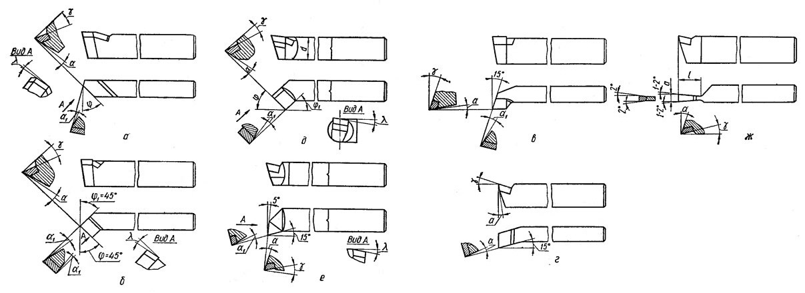

Одним из наиболее простых и распространенных металлорежущих инструментов является резец. Резцы применяются на токарных, расточных, строгальных и других станках. В зависимости от вида станка и рода выполняемой работы применяются резцы различных типов. Ниже изображены основные типы токарных резцов.
Для обточки наружных поверхностей вращения, т. е. цилиндрических валиков, конических поверхностей большой длины и им подобных деталей, применяют проходные резцы. Проходные резцы бывают прямые (а) и отогнутые (б). Отогнутые резцы получили широкое применение из-за их универсальности, большей жесткости, возможности вести обработку в менее доступных местах.
Отогнутыми резцами можно работать при продольной и поперечной подачах и вести обточку поверху, подрезку торцов, снятие фасок. Проходные резцы могут быть черновые и чистовые. Чистовые резцы имеют больший радиус закругления, что обеспечивает получение более чистой обработанной поверхности. Если необходимо получить особенно чистую и гладкую поверхность, применяют широкие лопаточные резцы. Эти резцы работают с большой подачей. Однако при значительной длине контакта режущей кромки с заготовкой они склонны к вибрациям, дрожанию.
Проходные упорные резцы (в) имеют угол в плане 90° и применяются при обточке ступенчатых валиков и подрезке буртиков, а также при точении нежестких деталей.
Подрезные резцы предназначаются для обточки плоскостей, перпендикулярных оси вращения, подрезки торцов на проход (г). Эти резцы работают с поперечной подачей. Расточные резцы служат для обработки отверстий (д, е). Они работают в менее благоприятных условиях, чем проходные резцы для наружной обточки. Расточные резцы должны иметь меньшие поперечные размеры, чем обрабатываемое отверстие. Они получаются длинными. Вылет резца должен быть больше длины растачиваемого отверстия. В силу малой жесткости расточные резцы склонны к вибрациям, что не дает возможности снимать стружку большого сечения.